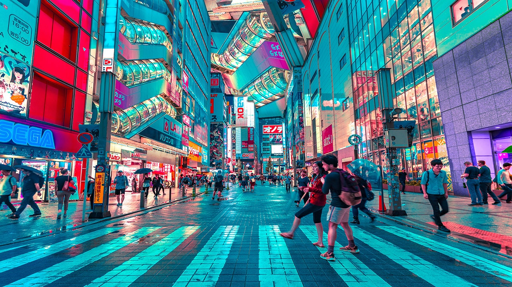

Paris, la capitale de l'amour !
Paris, la capitale de la France, est une ville emblématique connue pour son histoire, sa culture et son romantisme. Traversée par la Seine, elle est célèbre pour ses monuments emblématiques comme la Tour Eiffel, Notre-Dame de Paris, l’Arc de Triomphe et le Sacré-Cœur.
Paris est aussi un centre artistique et intellectuel, avec des musées prestigieux tels que le Louvre, le Musée d’Orsay et le Cen...
En savoir plus sur Paris
Tokyo, la capitale des sushis !
Tokyo, la capitale du Japon, est une métropole fascinante où tradition et modernité cohabitent harmonieusement. Située sur l’île de Honshū, elle est l’une des plus grandes villes du monde en termes de population et d’innovation technologique.
Malgré son urbanisme impressionnant, Tokyo conserve un riche héritage culturel. Des temples et sanctuaires comme le Sensō-ji à Asakusa ou le Meiji-jingū à Harajuku offrent des havres de pa...

Petite image de Tokyo
En savoir plus Tokyo